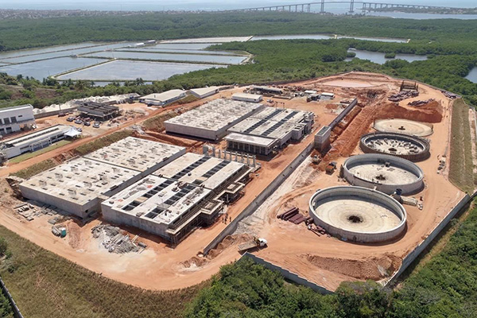

Seja a Mudança: A Comunidade Ambiental do RN te Espera
Educação, ativismo e justiça socioambiental.
Agendas
Ambientais e climáticas
Sustentabilidade
ODS ONU
Defesa dos animais
Pela defesa do meio ambiente e do clima
A Comunidade Ambiental (COAMB) é uma organização estudantil de pessoas interessadas em promover ações ambientais no Rio Grande do Norte (RN).
+
Membros
+
Eventos Realizados
+
Projetos

Nossa Visão
Ser reconhecida como a referência em sustentabilidade e inovação ambiental no Rio Grande do Norte e um polo de inspiração para a comunidade potiguar, formando líderes e agentes de transformação para um futuro mais verde e justo.
Nossa missão
Promover a conscientização, a pesquisa e a ação ambiental dentro da UFRN e na sociedade, por meio de projetos práticos, educação e engajamento, contribuindo para o desenvolvimento sustentável, a proteção da biodiversidade e a construção de uma cultura de respeito ao planeta e a todas as formas de vida.
Nossos valores
Os Valores são os princípios éticos e morais que guiam o comportamento e as decisões da COAMB. Eles são a essência da identidade da comunidade.
Programas
Visita Ferreiro Torto
8h00
05 de julho de 2025
Visita Técnica: Trilha e ação de plantio no mangue do Ferreiro Torto.
Inscrição

Circuito Ambiental
14h00
04 de julho de 2025
O Circuito Ambiental é uma caminhada guiada por dois importantes locais do campus.
InscriçãoVisita ao Museu da Ciências Moforlogicas
14h00
19 de Maio de 2025
Visita guiada ao Museu de Ciências Morfológicas da UFRN.
InscriçãoVisita à Matinha dos Saguis da UFRN
14h00
01 de Maio de 2025
Venha conhecer a Matinha dos Saguis, um refúgio de natureza e biodiversidade no coração da UFRN! Venha observar saguis e aprender sobre a flora local.
InscriçãoVisita às Zonas de Proteção Ambiental (ZPAs)
9h00
14 de Março de 2025
A Visita às Zonas de Proteção Ambiental de Natal é um evento focado em educação ambiental e sensibilização.
InscriçãoSeja voluntário na COAMB. Inscreva-se e faça parte dessa mudança!
8h00
07 de Fevereiro de 2025
Junte-se a nossa comunidade e faça parte do ecossistema de voluntários da COAMB.
InscriçãoPostagens
Eventos
JUN
7
2025
Diálogo pela Justiça Climática no RN
A Comunidade Ambiental, em parceria com o Idema, convida você para a mesa de diálogos "Comunidade Ambiental, Juventudes e Justiça Climática: Vozes que Emergem em Meio à Crise no RN". Vamos ouvir e fortalecer as vozes que lutam por um futuro mais justo e sustentável no nosso estado!
JUN
1 a 5
2025
Semana do Meio Ambiente 2025 UFRN
A Comissão de Organização da Semana do Meio Ambiente na Universidade Federal do Rio Grande do Norte tem a honra de convidar toda a comunidade acadêmica e externa para participar da Semana do Meio Ambiente 2025, com o tema "Clima, Sociedade, Tecnologia e Sustentabilidade". Que acontecerá entre os dias 2 e 4 de julho, em diversos espaços da universidade. - INSCRIÇÕES VIA SIGAA.
JUN
2
2025
Ato contra o PL da devastação
Neste dia 02/06 (segunda-feira), a partir das 16h30, vamos nos juntar na *Passarela do Via Direta*, para ecoar o nosso NÃO AO PL DA DEVASTAÇÃO, o Projeto de Lei 2159!
JUN
3 - 18
2025
Drive Thru da coleta seletiva
Convidamos toda a comunidade, interna e externa à UFRN, para participar da nossa Coleta Seletiva Solidária! Traga seus resíduos recicláveis e ajude as cooperativas de catadores e o meio ambiente. De 03/06 a 06/06 - Estacionamento do Centro de Convivência (ao lado do Setor 3) De 16/06 a 18/06 - Estacionamento do CTEC Os pontos funcionarão das 8h às 16h.